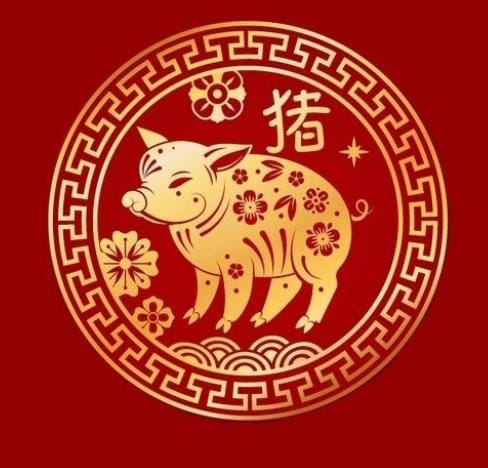

Visi Misi Koko Cici
Visi Misi dari Koko Cici Sendiri yaitu Menghidupkan kembali Kekayaan Seni
Sesuai dengan wujud dari minat besar generasi muda untuk
menghidupkan kembali kekayaan seni
dan budaya khas dari masyarakat Tionghoa, sebagai salah satu daya tarik wisata
Indonesia,
terkhusus nya kota Palembang.
Arti Dan Ramalan Setiap Shio tahun 2024
Shio Naga pada tahun Naga Kayu 2024 akan dapat mengantisipasi
fase pertumbuhan
dan peluang baru.Mereka akan berusaha untuk menyeimbangkan aspirasi dan
tanggung jawab
pribadi serta menghidupkan kembali asmara.
Shio Naga Kayu
Long - Naga Tahun 2024
Tahun 2024 membawa stabilitas dan kebahagiaan bagi shio Kelinci
menurut
astrologi Tiongkok. shio Kelinci tergolong baik dibandingkan dengan
orang-orang di
sekitarnya. Kelinci dapat merasakan
kepuasan relatif baik, baik dalam hal profesional maupun finansial.
Shio Kelinci
Tu - Kelinci
Tahun 2024
Orang dengan shio macan pada tahun 2024 dipercaya akan bernasib
hoki.
Mereka disarankan untuk berani mengambil
risiko di tahun yang paling menantang dalam hidup mereka. Tahun Naga cocok
bagi para macan
yang mau membuka atau
mengembangkan usaha baru, karena memiliki sinergi yang baik.
Shio Macan
Hu - Macan Tahun 2024
Berdasarkan ramalan shio tahun 2024, para pemilik Shio Kerbau
akan berusaha
mencapai stabilitas dan kontinuitas dalam
pendapatan dan keuangan. Banyak peluang untuk investasi keuangan, tapi
jangan tergiur dulu
karena tahun ini tidak
menguntungkan.
Shio Kerbau
Niu - Kerbau Tahun 2024
2024 bukan merupakan tahun yang begitu baik untuk individu
dengan Shio Tikus
secara finansial. Meskipun begitu, tetap
ada peluang untuk meningkatkan pendapatan.
Shio Tikus
Shu - Tikus
Tahun 2024
Tahun 2024, Shio Babi akan mendapatkan kemakmuran, rezeki
melimpah, dan
keberuntungan. Karier Shio Babi juga diprediksi
bakal mapan. Adapun warna keberuntungan untuk Shio Babi adalah kuning,
cokelat, emas, dan
abu-abu.

Shio Babi
Zhu - Babi
Tahun 2024
Tahun 2024 Shio Anjing diprediksi akan kaya raya, banyak rezeki,
dan mendapat
anugerah kebahagiaan.
Adapun angka keberuntungan bagi Shio
Anjing adalah 3, 4, dan 9.
Shio Anjing
Gou - Anjing Tahun 2024
Tahun 2024 Shio Ayam disebut sebagai orang yang sangat jeli.
Selain itu, mereka
juga seorang pekerja keras, banyak akal, berani,
berbakat, dan sangat percaya diri.
Shio Ayam
Ji - Ayam
Tahun 2024
Ramalan Shio Monyet di tahun 2024 untuk keuangan masih cukup
menjanjikan.
Keputusan investasi yang tepat akan membawa
pendapatan tak terduga. Menjaga kebugaran dengan rutin berolahraga dan
melakukan latihan
fisik guna menjaga keseimbangan
tubuh dapat berdampak baik pada kondisi tubuh.
Shio Monyet
Hou - Monyet Tahun 2024
Pemilik shio Kambing patut berbahagia tahun ini karena nenempati
posisi teratas
paling beruntung di tahun 2024. Itu
karena shio Kambing cenderung memiliki rezeki yang melimpah, kesejahteraan
fisik maupun
mental serta kesuksesan yang
diraih dari hasil kerja keras yang tekun dan rajin.
Shio Kambing
Yang - Kambing Tahun 2024
Tahun 2024 mungkin akan dihadapkan pada beberapa tantangan yang
memerlukan
kegigihan untuk diatasi. Kehati-hatian akan
sangat diperlukan, terutama dalam menghadapi tawaran karier dan situasi
finansial yang
mungkin berisiko.
Shio Kuda
Ma - Kuda
Tahun 2024
Di tahun 2024, para pemilik shio Ular akan mendapatkan
keberuntungan, termasuk
dalam hal karir dan profesionalisme.
Keberuntungan ini merupakan perpaduan antara kegembiraan dan tantangan bagi
mereka.
Shio Ular
She - Ular
Tahun 2024